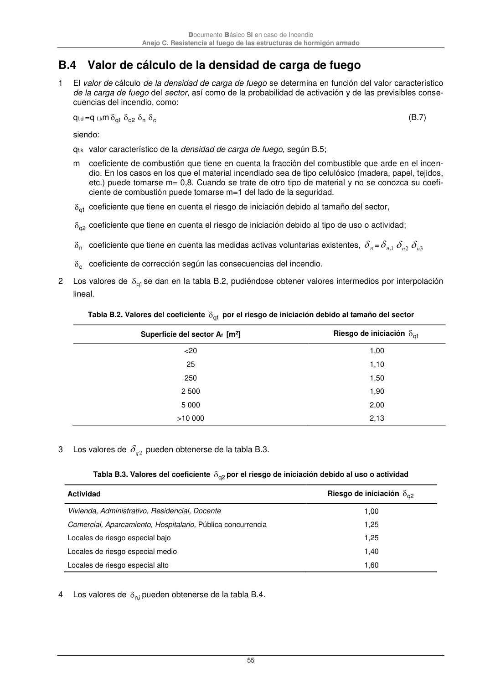

DB-SI · B.4 Valor de cálculo de la densidad de carga de fuego · versión 2025-03-04
SHA256: 0a2e78cd62471d9cc5cfe2efbc6aa39fdbad73c124aea7b039f9de96c141e105 · página física 55 de 92 · métodos de encabezado
solo si están cotejados.
Formatos: Markdown · JSON de bloques · PDF p. 55 · imagen PNG
Documento Básico SI en caso de Incendio Anejo C. Resistencia al fuego de las estructuras de hormigón armado 55 B.4 Valor de cálculo de la densidad de carga de fuego 1 El valor de cálculo de la densidad de carga de fuego se determina en función del valor característico de la carga de fuego del sector, así como de la probabilidad de activación y de las previsibles conse- cuencias del incendio, como: qf,d =q f,km 1 q 2 q n c (B.7) siendo: qf,k valor característico de la densidad de carga de fuego, según B.5; m coeficiente de combustión que tiene en cuenta la fracción del combustible que arde en el incen- dio. En los casos en los que el material incendiado sea de tipo celulósico (madera, papel, tejidos, etc.) puede tomarse m= 0,8. Cuando se trate de otro tipo de material y no se conozca su coefi- ciente de combustión puede tomarse m=1 del lado de la seguridad. 1 q coeficiente que tiene en cuenta el riesgo de iniciación debido al tamaño del sector, 2 q coeficiente que tiene en cuenta el riesgo de iniciación debido al tipo de uso o actividad; n coeficiente que tiene en cuenta las medidas activas voluntarias existentes, n = 1, n 2 n 3 n c coeficiente de corrección según las consecuencias del incendio. 2 Los valores de 1 q se dan en la tabla B.2, pudiéndose obtener valores intermedios por interpolación lineal. Tabla B.2. Valores del coeficiente 1 q por el riesgo de iniciación debido al tamaño del sector Superficie del sector Af [m2] Riesgo de iniciación 1 q <20 1,00 25 1,10 250 1,50 2 500 1,90 5 000 2,00 >10 000 2,13 3 Los valores de 2 q pueden obtenerse de la tabla B.3. Tabla B.3. Valores del coeficiente 2 q por el riesgo de iniciación debido al uso o actividad Actividad Riesgo de iniciación 2 q Vivienda, Administrativo, Residencial, Docente 1,00 Comercial, Aparcamiento, Hospitalario, Pública concurrencia 1,25 Locales de riesgo especial bajo 1,25 Locales de riesgo especial medio 1,40 Locales de riesgo especial alto 1,60 4 Los valores de i,n pueden obtenerse de la tabla B.4.
